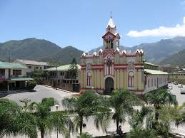

Macará es un cantón del sur de Ecuador en la provincia de Loja, conocido por su belleza natural y clima agradable. Es conocida como la “Ciudad de las Flores” por la abundante flora que adorna la ciudad. Macará es famosa por la producción de plátanos y café, que son los pilares de la economía de la región.
Macará se encuentra en la lista de los pueblos mágicos, ubicado al sur Ecuador. Posee lugares turísticos impresionantes en donde se resalta el paisaje natural. Su cantonización se la celebra cada 22 de septiembre. Además, Macará es mundialmente conocido por su producción de arroz, ha tenido reconocimiento por la Unesco como Reserva de Biósfera fue concedido a los bosques secos del sur del Ecuador conformado por los cantones lojanos Zapotillo, Macará, Puyango, Pindal y Celica. Macará tiene un clima subtropical seco y está atravesado por el río del mismo nombre, formándose en sus riveras balnearios visitados por turistas nacionales y extranjeros, incluso Macará fue declarado Pueblo Mágico del Ecuador. Macará es de origen incásico de una tribu llamada Macarara y por el continuo uso se s La historia de Macará se remonta a la época precolombina, cuando en la zona habitaban indígenas. Sin embargo, la verdadera historia de la ciudad comenzó durante la colonización española en el siglo XVI. Durante el período colonial, Macará fue un lugar de encuentro entre exploradores y expediciones sudamericanas. Su ubicación estratégica cerca de la frontera con Perú le dio importancia como punto de tránsito en la región. En 1830, cuando Ecuador se independizó, Macará pasó a ser el cantón de la provincia de Loja.
Altitud Media 400 m s. n. m Clima 25 a 33 °C Terreno y Topografía: Macará está ubicado en una región montañosa típica del altiplano del Ecuador. El terreno es accidentado y los cerros y montañas están cubiertos de vegetación. El cantón también se encuentra cerca de la frontera con Perú, lo que le otorga una ubicación geográfica estratégica.Economía: La economía de Macará se basa en la agricultura y la ganadería. Los residentes cultivan una variedad de cultivos como maíz, patatas, verduras y frutas. La ganadería también es una importante fuente de ingresos para la sociedad. Además, el comercio y las relaciones con la vecina ciudad peruana de Aguas Verdes son aspectos importantes de la economía de la región.Cultura: La población de Macará mantiene un rico patrimonio cultural con tradiciones indígenas y mestizas. La música y la danza son una parte importante de la vida cultural de la comunidad, se organizan festivales y eventos culturales durante todo el año.Pueblos Indígenas: Como en el resto de la provincia de Loja, Macará también cuenta con comunidades indígenas que preservan sus tradiciones e idiomas y enriquecen la diversidad cultural de la región.
|  |
| Macara |